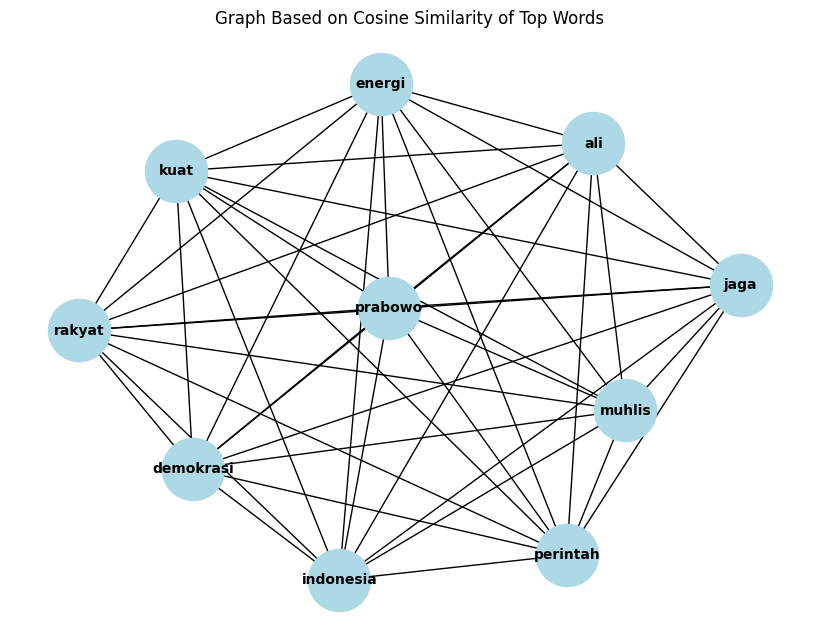

Keyword Ekstraction#
from google.colab import drive
drive.mount('/content/drive')
---------------------------------------------------------------------------
KeyboardInterrupt Traceback (most recent call last)
<ipython-input-1-d5df0069828e> in <cell line: 2>()
1 from google.colab import drive
----> 2 drive.mount('/content/drive')
/usr/local/lib/python3.10/dist-packages/google/colab/drive.py in mount(mountpoint, force_remount, timeout_ms, readonly)
98 def mount(mountpoint, force_remount=False, timeout_ms=120000, readonly=False):
99 """Mount your Google Drive at the specified mountpoint path."""
--> 100 return _mount(
101 mountpoint,
102 force_remount=force_remount,
/usr/local/lib/python3.10/dist-packages/google/colab/drive.py in _mount(mountpoint, force_remount, timeout_ms, ephemeral, readonly)
135 )
136 if ephemeral:
--> 137 _message.blocking_request(
138 'request_auth',
139 request={'authType': 'dfs_ephemeral'},
/usr/local/lib/python3.10/dist-packages/google/colab/_message.py in blocking_request(request_type, request, timeout_sec, parent)
174 request_type, request, parent=parent, expect_reply=True
175 )
--> 176 return read_reply_from_input(request_id, timeout_sec)
/usr/local/lib/python3.10/dist-packages/google/colab/_message.py in read_reply_from_input(message_id, timeout_sec)
94 reply = _read_next_input_message()
95 if reply == _NOT_READY or not isinstance(reply, dict):
---> 96 time.sleep(0.025)
97 continue
98 if (
KeyboardInterrupt:
cd /content/drive/MyDrive/PPW/tugas
/content/drive/MyDrive/PPW/tugas
!pip install Sastrawi
Collecting Sastrawi
Downloading Sastrawi-1.0.1-py2.py3-none-any.whl.metadata (909 bytes)
Downloading Sastrawi-1.0.1-py2.py3-none-any.whl (209 kB)
━━━━━━━━━━━━━━━━━━━━━━━━━━━━━━━━━━━━━━━━ 209.7/209.7 kB 3.9 MB/s eta 0:00:00
?25hInstalling collected packages: Sastrawi
Successfully installed Sastrawi-1.0.1
# Mengimpor modul yang diperlukan
import nltk
import re
import pandas as pd
import numpy as np
import matplotlib.pyplot as plt
import networkx as nx
from sklearn.feature_extraction.text import TfidfVectorizer
from sklearn.metrics.pairwise import cosine_similarity
from Sastrawi.Stemmer.StemmerFactory import StemmerFactory
from nltk.corpus import stopwords
from nltk.tokenize import sent_tokenize
from nltk.tokenize import word_tokenize
nltk.download('punkt')
nltk.download('stopwords')
[nltk_data] Downloading package punkt to /root/nltk_data...
[nltk_data] Package punkt is already up-to-date!
[nltk_data] Downloading package stopwords to /root/nltk_data...
[nltk_data] Package stopwords is already up-to-date!
True
Load Data#
# Path ke file di Google Drive (ubah sesuai lokasimu)
file_path = '/content/drive/MyDrive/PPW/tugas/Tugas-Crawling-Data-Berita-2-kategori.csv'
# Baca file CSV
df = pd.read_csv(file_path)
Ekstraksi Kalimat#
text = df['Isi Berita'][0]
# Ekstraksi kalimat
sentences = sent_tokenize(text)
# Membuat DataFrame dari kalimat
df_sentences = pd.DataFrame(sentences, columns=["Kalimat"])
df_sentences.head()
| Kalimat | |
|---|---|
| 0 | TIMESINDONESIA, JAKARTA – Di bawah kepemimpina... |
| 1 | Hal itu dengan fokus pada kemandirian pangan d... |
| 2 | Prabowo diharapkan mampu membawa Indonesia men... |
| 3 | ketika dimintai pendapatnya terkait prospek pe... |
| 4 | Setelah dilantik sebagai Presiden Republik Ind... |
Preprosesing#
# Membuat objek stemmer
factory = StemmerFactory()
stemmer = factory.create_stemmer()
# Mendapatkan daftar stopwords bahasa Indonesia
stop_words = set(stopwords.words('indonesian'))
def preprocess_sentence(sentence):
# Hanya menyisakan huruf dan titik, serta menghapus spasi yang berlebihan
sentence_cleaned = re.sub(r'[^a-zA-Z\s.]', ' ', sentence).strip() # Menghapus karakter selain huruf dan titik
sentence_cleaned = re.sub(r'\s+', ' ', sentence_cleaned) # Menghapus spasi lebih dari satu
sentence_cleaned = sentence_cleaned.lower() # Ubah ke huruf kecil
# Tokenisasi
words = word_tokenize(sentence_cleaned) # Memecah teks menjadi kata-kata
# Stemming setiap kata
stemmed_words = [stemmer.stem(word) for word in words]
# Menghapus stopwords dan kata kosong (jika ada spasi kosong yang tersisa)
words_without_stopwords = [word for word in stemmed_words if word not in stop_words and word.strip() != '']
return words_without_stopwords
# Preprocessing kalimat menjadi daftar kata
preprocessed_words = [word for sentence in sentences for word in preprocess_sentence(sentence)]
# Membuat DataFrame dari kata-kata yang sudah dipreproses
df_preprocessed = pd.DataFrame(preprocessed_words, columns=["kata_clean"])
# Menghapus baris kosong jika ada (jika secara tidak sengaja spasi masih tersisa)
df_preprocessed = df_preprocessed[df_preprocessed['kata_clean'].str.strip() != '']
Hasil Preprosesing menjadi daftar kata#
df_preprocessed
| kata_clean | |
|---|---|
| 0 | timesindonesia |
| 1 | jakarta |
| 2 | pimpin |
| 3 | presiden |
| 4 | ri |
| ... | ... |
| 549 | news |
| 550 | klik |
| 551 | link |
| 552 | lupa |
| 553 | follow |
554 rows × 1 columns
TF-IDF#
tf-idf hanya mempertahankan kata-kata yang memiliki makna penting berdasarkan frekuensi kemunculannya dalam dokumen
hanya sekitar 305 kata yang dipertahankan oleh TF-IDF karena kata-kata ini dianggap penting (berdasarkan bobotnya).
Kata-kata yang dicetak oleh TF-IDF, yaitu 305 kata, merupakan kata-kata yang dianggap lebih relevan atau penting dalam teks berdasarkan frekuensi kemunculan mereka di seluruh dokumen yang sedang dianalisis. Kata-kata yang tidak dipertahankan bisa jadi terlalu umum dan tidak memberikan informasi tambahan tentang dokumen.
# Inisialisasi TfidfVectorizer tanpa batasan jumlah fitur
vectorizer = TfidfVectorizer()
# Mengonversi kata yang sudah dipreproses menjadi string untuk keperluan TF-IDF
preprocessed_text = [' '.join(preprocessed_words)]
# Fit dan transform teks ke dalam TF-IDF
tfidf_matrix = vectorizer.fit_transform(preprocessed_text)
# Konversi TF-IDF matrix ke DataFrame
tfidf_df = pd.DataFrame(tfidf_matrix.toarray(), columns=vectorizer.get_feature_names_out())
tfidf_df
| acara | acu | adil | adu | advertisement | agenda | ajak | akses | aktif | akuntabel | ... | umkm | unggul | uni | upaya | usaha | utama | visi | waris | wibawa | wujud | |
|---|---|---|---|---|---|---|---|---|---|---|---|---|---|---|---|---|---|---|---|---|---|
| 0 | 0.018131 | 0.036262 | 0.018131 | 0.018131 | 0.018131 | 0.018131 | 0.018131 | 0.018131 | 0.018131 | 0.018131 | ... | 0.018131 | 0.018131 | 0.018131 | 0.036262 | 0.036262 | 0.054393 | 0.036262 | 0.018131 | 0.018131 | 0.036262 |
1 rows × 305 columns
mencetak 10 kata dengan bobot tfidf paling tinggi#
# Mengekstraksi kata-kata dengan bobot tertinggi
top_n = 10 # Jumlah kata tertinggi yang ingin diekstraksi
tfidf_top_words = tfidf_df.T.sort_values(by=0, ascending=False).head(top_n)
tfidf_top_words
| 0 | |
|---|---|
| prabowo | 0.562059 |
| muhlis | 0.344488 |
| indonesia | 0.344488 |
| perintah | 0.217571 |
| demokrasi | 0.217571 |
| kuat | 0.145048 |
| ali | 0.145048 |
| rakyat | 0.126917 |
| energi | 0.108786 |
| jaga | 0.090655 |
Cosinus Similarity#
# Menghitung cosine similarity antar kata berdasarkan TF-IDF dari kata-kata teratas
cosine_sim_matrix = cosine_similarity(tfidf_df[tfidf_top_words.index].T)
# Mengubah cosine similarity matrix ke dalam DataFrame
cosine_sim_df = pd.DataFrame(cosine_sim_matrix,
index=tfidf_top_words.index,
columns=tfidf_top_words.index)
cosine_sim_df
| prabowo | muhlis | indonesia | perintah | demokrasi | kuat | ali | rakyat | energi | jaga | |
|---|---|---|---|---|---|---|---|---|---|---|
| prabowo | 1.0 | 1.0 | 1.0 | 1.0 | 1.0 | 1.0 | 1.0 | 1.0 | 1.0 | 1.0 |
| muhlis | 1.0 | 1.0 | 1.0 | 1.0 | 1.0 | 1.0 | 1.0 | 1.0 | 1.0 | 1.0 |
| indonesia | 1.0 | 1.0 | 1.0 | 1.0 | 1.0 | 1.0 | 1.0 | 1.0 | 1.0 | 1.0 |
| perintah | 1.0 | 1.0 | 1.0 | 1.0 | 1.0 | 1.0 | 1.0 | 1.0 | 1.0 | 1.0 |
| demokrasi | 1.0 | 1.0 | 1.0 | 1.0 | 1.0 | 1.0 | 1.0 | 1.0 | 1.0 | 1.0 |
| kuat | 1.0 | 1.0 | 1.0 | 1.0 | 1.0 | 1.0 | 1.0 | 1.0 | 1.0 | 1.0 |
| ali | 1.0 | 1.0 | 1.0 | 1.0 | 1.0 | 1.0 | 1.0 | 1.0 | 1.0 | 1.0 |
| rakyat | 1.0 | 1.0 | 1.0 | 1.0 | 1.0 | 1.0 | 1.0 | 1.0 | 1.0 | 1.0 |
| energi | 1.0 | 1.0 | 1.0 | 1.0 | 1.0 | 1.0 | 1.0 | 1.0 | 1.0 | 1.0 |
| jaga | 1.0 | 1.0 | 1.0 | 1.0 | 1.0 | 1.0 | 1.0 | 1.0 | 1.0 | 1.0 |
Matriks Adjacency#
# Threshold untuk adjacency (misalnya > 0.8 dianggap connected)
threshold = 0.8
adj_matrix_cosine = (cosine_sim_matrix > threshold).astype(int)
np.fill_diagonal(adj_matrix_cosine, 0) # Menghapus self-loops
# Mengonversi adjacency matrix menjadi DataFrame
adjacency_df = pd.DataFrame(adj_matrix_cosine,
index=tfidf_top_words.index,
columns=tfidf_top_words.index)
adjacency_df
| prabowo | muhlis | indonesia | perintah | demokrasi | kuat | ali | rakyat | energi | jaga | |
|---|---|---|---|---|---|---|---|---|---|---|
| prabowo | 0 | 1 | 1 | 1 | 1 | 1 | 1 | 1 | 1 | 1 |
| muhlis | 1 | 0 | 1 | 1 | 1 | 1 | 1 | 1 | 1 | 1 |
| indonesia | 1 | 1 | 0 | 1 | 1 | 1 | 1 | 1 | 1 | 1 |
| perintah | 1 | 1 | 1 | 0 | 1 | 1 | 1 | 1 | 1 | 1 |
| demokrasi | 1 | 1 | 1 | 1 | 0 | 1 | 1 | 1 | 1 | 1 |
| kuat | 1 | 1 | 1 | 1 | 1 | 0 | 1 | 1 | 1 | 1 |
| ali | 1 | 1 | 1 | 1 | 1 | 1 | 0 | 1 | 1 | 1 |
| rakyat | 1 | 1 | 1 | 1 | 1 | 1 | 1 | 0 | 1 | 1 |
| energi | 1 | 1 | 1 | 1 | 1 | 1 | 1 | 1 | 0 | 1 |
| jaga | 1 | 1 | 1 | 1 | 1 | 1 | 1 | 1 | 1 | 0 |
Graph#
# Membuat graph dari adjacency matrix berdasarkan cosine similarity
graph_cosine = nx.from_numpy_array(adj_matrix_cosine)
# Membuat label kata dari tfidf_top_words
labels = {i: word for i, word in enumerate(tfidf_top_words.index)}
# Menggambar graph cosine similarity dengan label kata
plt.figure(figsize=(8, 6))
pos_cosine = nx.spring_layout(graph_cosine) # Layout untuk menampilkan graph
nx.draw(graph_cosine, pos_cosine, with_labels=True, labels=labels, node_color="lightblue", node_size=2000, font_size=10, font_weight='bold')
plt.title("Graph Based on Cosine Similarity of Top Words")
plt.show()

Centrality#
# Menghitung centrality
degree_centrality = nx.degree_centrality(graph_cosine)
# Membuat dataframe untuk setiap centrality
centrality_df = pd.DataFrame({
'Word': [labels[i] for i in degree_centrality.keys()],
'Degree Centrality': degree_centrality.values()
})
# Menampilkan dataframe
centrality_df
| Word | Degree Centrality | |
|---|---|---|
| 0 | prabowo | 1.0 |
| 1 | muhlis | 1.0 |
| 2 | indonesia | 1.0 |
| 3 | perintah | 1.0 |
| 4 | demokrasi | 1.0 |
| 5 | kuat | 1.0 |
| 6 | ali | 1.0 |
| 7 | rakyat | 1.0 |
| 8 | energi | 1.0 |
| 9 | jaga | 1.0 |
Keyword#
word = centrality_df['Word'].iloc[0] # Mengambil kata pertama
degree_centrality = centrality_df['Degree Centrality'].iloc[0] # Mengambil Degree Centrality pertama
print(f"Kata Kunci: {word} dengan degree centrality {degree_centrality}")
Kata Kunci: prabowo dengan degree centrality 1.0